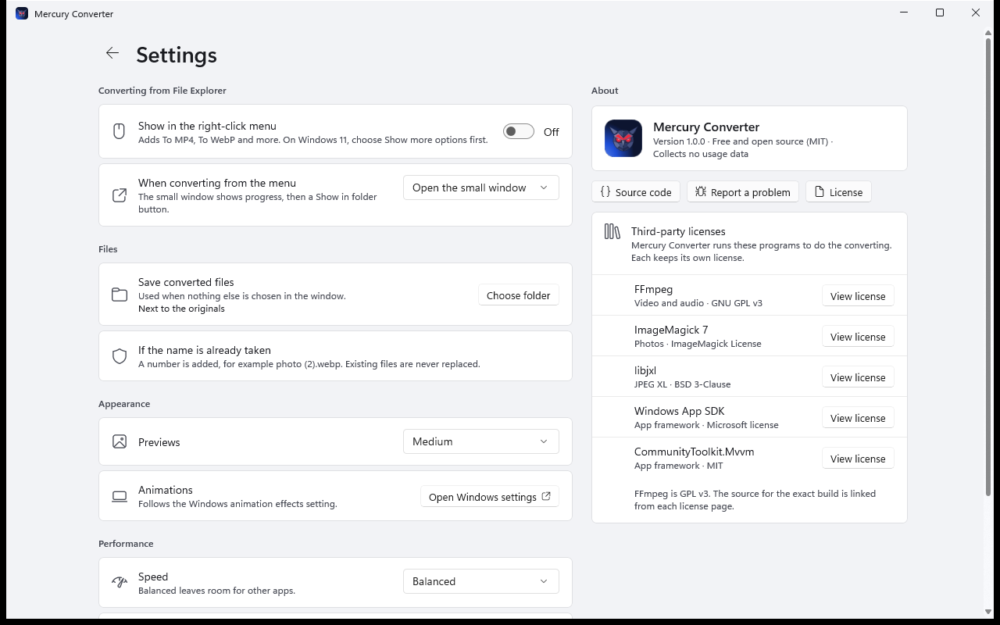

Guide
Everything you need to know to use Mercury Converter. Short on time? Read Your first conversion and you are set.
Install
- Download the installer. Prefer no install? Get the portable zip, unzip it anywhere, and run
MercuryConverter.exe. - Run it. If Windows says "Windows protected your PC", choose More info, then Run anyway. This appears because Mercury is new and not code-signed yet (more).
- Choose who it is for. "Just me" needs no administrator password. "All users" installs for everyone on the PC.
Mercury needs Windows 10 (version 2004 or later) or Windows 11, 64-bit. It includes everything it needs. There is nothing else to install.
Your first conversion
- Add your files. Drag them anywhere onto the window, or press Ctrl+O. Whole folders work too (Ctrl+Shift+O).
- Pick a format. On the right, under Convert to, each kind of file has a recommended format already chosen.
- Press Convert. Each file shows its progress. When it finishes you see how much smaller it became.

That is it. Your converted files appear next to the originals unless you choose a different folder.
The window
Files
Every file is a card with a preview, its name, its size, and what it will become. Click a card to select it. Selected cards get a blue outline and a check mark. When you select files, the options on the right change only those files. Press Ctrl+A to select all, or choose Clear selection.
The ⋯ button on a card opens its menu: open the result, show it in its folder, copy its path, convert again, or remove it from the list.
Filters
The pills above the cards (All, Photos, Videos and so on) filter the list. While converting, they become Converting, Waiting, Done, Failed and Cancelled. Jump to active shows what is being converted right now.
View and sort
Use View to turn previews off or choose their size, and Sort to order by when files were added, name, size or type.
Small windows
If you make the window narrow, the options panel hides. Press Options in the top bar to slide it open.

Choosing a format
Select Convert to for a kind of file to see its formats. The best choices for most people are marked with a tag like Works everywhere.
| Convert | Good choices |
|---|---|
| Photos | WebP is the smallest for websites. JPEG opens everywhere. JPEG XL and AVIF are smaller still, for newer apps. PNG keeps every pixel and see-through backgrounds. TIFF is for printing. PDF puts each photo on a page. |
| GIFs | GIF stays a GIF. MP4 and WebM are far smaller but no longer GIFs. |
| Video | MP4 plays on every phone, computer and TV. WebM is small, for websites. MKV keeps every audio track and subtitle. GIF makes a short silent animation (files get much larger). |
| Audio | MP3 plays everywhere. AAC is good for Apple devices. FLAC keeps full quality at about half the size of WAV. WAV is uncompressed. |
Quality and size
The Quality slider runs from 10 to 100. Next to it you see the name for that level (for example Balanced) and below it the expected total size and how much smaller that is. The estimate is a close guess, not a promise.
- Smallest file (30 and below): tiny files, some visible loss.
- Balanced (about 55 to 80): looks the same to most eyes. This is the default.
- Best quality (above 92): largest files, closest to the original.
Formats that never lose quality (PNG, TIFF, PDF, FLAC, WAV) hide the slider, because there is nothing to adjust.
JPEG to JPEG XL without loss: choose JPEG XL at quality 100 for JPEG photos. Mercury repacks them without changing a single pixel, usually 20% smaller, and the original JPEG can be rebuilt exactly.
More options
Open More options for extras. Only the ones that apply to your files appear.
- Size: keep the original size, half size, fit within 1920 px or 480 px, 1080p or 720p.
- Rotate and flip: turn a photo or video left or right, or mirror it.
- Video speed: Slower makes smaller files, Faster finishes sooner. Balanced is the default.
- Channels (audio only): keep as is, mono, or stereo.
Presets
Presets save a whole set of choices under one name. The chips at the top of the options panel apply a preset in one click. Press Manage presets to see them all.
Built-in presets:
- Web photo: WebP, up to 1920 px wide
- Phone share: JPEG, up to 1080 px tall
- Smallest photo: JPEG XL
- Archive: lossless PNG
- Video for sharing: MP4, 1080p
- Video for web: WebM, 720p
- Short GIF: GIF, 480 px wide
- Podcast audio: MP3
- Keep exact JPEG: reversible JPEG XL
- Photos to PDF
To make your own, set things up the way you like, open Manage presets, type a name and choose Save current settings as a preset. You can rename or delete your own presets, and Import and Export them to share with other computers.
Where files are saved
By default, next to the originals. Under Save to choose Change to pick another folder.
- The new file keeps the name and gets the new ending:
holiday.jpgbecomesholiday.webp. - If the ending is the same (for example MP4 to MP4), Mercury adds
-converted. - If that name is taken, a number is added:
holiday (2).webp. Existing files are never replaced. - While working, the file has a temporary name. It gets its final name only when it is complete, so you never find a half-finished file.
Right-click menu
Convert without opening the window.
- Open Settings (the gear, top right) and turn on Show in the right-click menu. Mercury also offers this once, the first time you add files.
- In File Explorer, right-click a photo, video or song. On Windows 11, choose Show more options (or hold Shift while you right-click).
- Choose Mercury Converter, then a line like To Mp4 or To Webp.
For one file, a Quick Convert window opens beside your mouse. It shows progress, then Saved as photo.webp · 1.1 MB (−74%) with a Show in folder button. Press Esc to close it at any time. Select several files first and they all convert in the main window.

Lines marked (low quality) make smaller files for one conversion only. They do not change your saved settings. If a video is damaged part-way through, Quick Convert offers Save first 0:41, which keeps the part that can be read.
Prefer the main window? In Settings, change When converting from the menu to Open the full window.
Settings

| Setting | What it does |
|---|---|
| Show in the right-click menu | Adds or removes the Mercury entries in File Explorer. |
| When converting from the menu | Small Quick Convert window, or the full window. |
| Save converted files | Next to the originals, or in a folder you choose. |
| Previews | Off, small, medium or large previews on the cards. |
| Speed | Gentle leaves lots of room for other apps. Balanced adapts to how busy your PC is. Fastest uses everything. |
| Encode video on the graphics card | Uses less processor, but files are about 60% larger. Off by default. Mercury always uses the graphics card to decode video when it can. |
| Show progress on the taskbar | The green bar on Mercury's taskbar button. |
| Tell me when a new version is out | Once a day Mercury asks GitHub whether a newer version exists, and shows a notice with a Download button. Nothing else is sent and nothing is installed for you. Off until you say yes (Mercury asks once, the first time you open it). |
Settings and presets are stored in %LOCALAPPDATA%\MercuryConverter.
Keyboard shortcuts
| Keys | Action |
|---|---|
| Ctrl + O | Add files |
| Ctrl + Shift + O | Add a folder |
| Ctrl + A | Select all files |
| Space | Select or deselect the focused file |
| Delete | Remove the selected files from the list |
| Enter | Convert |
| Esc | Cancel the run, close the options pane, Settings or Quick Convert |
| F5 | Retry the selected files |
| Ctrl + Shift + C | Copy the path of the selected file |
Uninstall
Use Settings → Apps → Installed apps in Windows. Uninstalling removes the right-click entries. Your settings and presets are kept, so a reinstall picks up where you left off. To remove them too, delete %LOCALAPPDATA%\MercuryConverter. For the portable version, turn off the right-click menu in Settings first, then delete the folder.